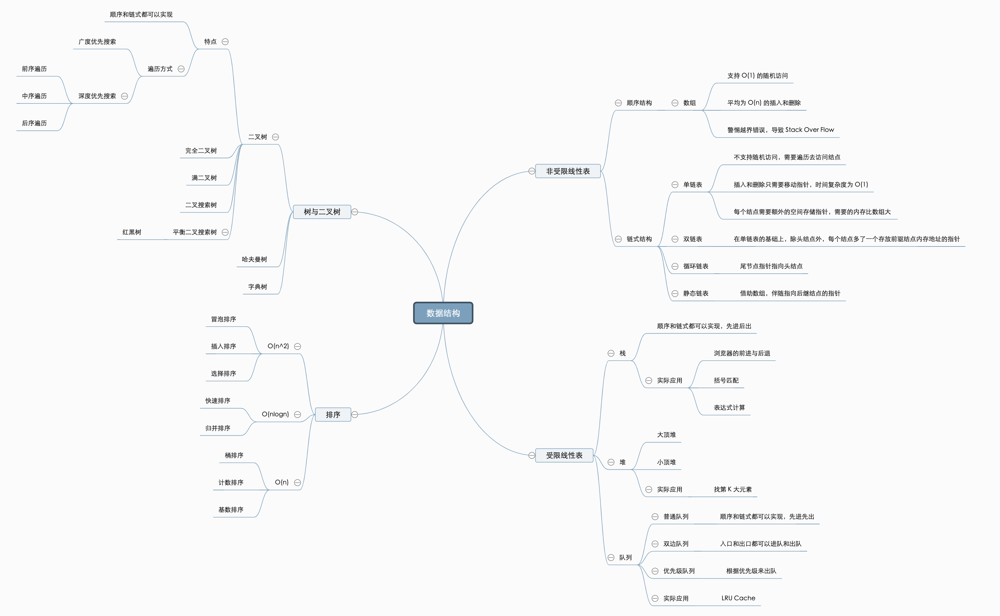

数据结构的深度思考和总结
1.数据结构的本质
数据结构的本质其实就是链表和数组，其他复杂的数据结构不过是这些基本结构的高级抽象。无论是树、栈、队列，还是更高级的图结构，归根结底都是基于数组或链表构建的。它们通过底层的实现细节和不同的逻辑组织方式，提供了更易用的API接口。

比如，树这种数据结构，既可以用数组来实现，也可以用链表构建。数组的优势在于可以通过索引快速访问，节省空间，而链表的优势则在于高效的插入和删除操作。但链表由于使用指针，会占用更多的空间。
我们可以从Redis的实现上看到这一点，它内部有字符串、集合等数据结构，每一种数据类型都有不同的实现方式。其实，我们自己也可以根据具体的业务场景，设计并实现出个性化的数据结构，并定义一些适合当前业务需求的API接口。
语言层面也为我们提供了丰富的数据结构工具。比如在Python中，除了常用的字典和列表外，还可以通过collections模块找到一些更灵活和高效的数据类型，如defaultdict、双端队列deque、计数器Counter等。Java的java.util包中也包含了大量用于扩展基础数据结构的工具类。
综上所述，数据结构的底层其实就是数组和链表。无论是集合还是字典，都是通过哈希函数来将元素映射到具体的存储位置上。
那么，算法的本质是什么？
算法的本质其实就是穷举。但穷举并不是那么简单的，它需要做到两点：不漏和聪明的穷举。
计算机与人类解决问题的思维方式完全不同。人类可能通过一个公式就能解决问题，而计算机则依赖计算能力不断进行尝试，直到得到结果。计算机最大的优点就是速度快、不怕累。因此，算法就是用计算机语言把人的问题转化为机器能够执行的程序，通过不断的尝试来解决。
1. 不漏
“不漏”指的是算法给出的解答必须是完整的。比如很多组合问题常用回溯算法来解决，算法需要确保所有可能的解都被考虑到，没有遗漏。
2. 聪明的穷举
“聪明的穷举”就是通过优化策略来提高效率。最简单的算法可能是暴力破解，但它通常效率低下。为了提高效率，我们需要进行优化，而所有的优化手段，归根结底都是为了更聪明地穷举。
举个例子，双指针和滑动窗口技巧就是为了在穷举过程中减少不必要的时间消耗。相比于传统的双重循环，它们能显著提高时间效率。同样的，有时可以选择更合适的数据结构来减少穷举，比如使用双链表代替单链表，可以节省一定的操作步骤。
在算法设计中，还有一些优化技巧，比如剪枝，即在遍历树时提早终止不必要的分支；又比如记忆化搜索，通过缓存中间结果来避免重复计算。
综上所述，数据结构其实就是在说程序存储和读取数据的方法，算法则是在说计算方法不同导致的资源占用和效率不同
2. 线性数据结构
数组 (Array)
- 定义与特性
数组是内存中连续分配的元素集合，支持常数时间的随机访问。1
2
3int arr[5] = {1, 2, 3, 4, 5}; // 定义一个包含5个整数的数组
int element = arr[2]; // 访问索引为2的元素
arr[1] = 10; // 修改索引为1的元素 - 优缺点分析
- 优点：支持常数时间的随机访问，适合查找场景。
- 缺点：插入和删除操作需要移动大量元素，效率较低。
- 典型应用场景与变体
- 动态数组：大小可动态变化的数组，如C++中的
std::vector。 - 稀疏矩阵：存储少量非零元素的矩阵，节省内存。
- 动态数组：大小可动态变化的数组，如C++中的
链表 (Linked List)
- 定义与特性
链表是由一系列节点组成的，每个节点包含数据和指向下一个节点的指针。支持高效的插入和删除操作。1
2
3
4
5
6
7
8struct Node {
int data;
Node* next;
};
Node* head = nullptr; // 创建一个空链表
Node* newNode = new Node{10, nullptr}; // 创建一个新节点
head = newNode; // 将新节点作为链表头部 - 单链表与双链表
- 单链表：每个节点仅指向下一个节点。
- 双链表：每个节点同时指向前一个和后一个节点，便于双向遍历。
- 优缺点分析
- 优点：插入和删除操作的时间复杂度为O(1)。
- 缺点：不能随机访问，查找某个元素需要遍历链表。
- 典型应用
- LRU缓存：使用双向链表和哈希表实现最近最少使用（Least Recently Used）缓存策略。
- 队列：使用链表实现的队列，支持高效的入队和出队操作。
栈与队列
栈 (Stack)
- 定义与特性
栈是一种后进先出（LIFO, Last In First Out）数据结构，只有栈顶元素可以被访问。常用于递归问题的处理。1
2
3
4
5
6
7
8
9
10
11const int MAX = 1000;
int stack[MAX];
int top = -1;
void push(int x) {
stack[++top] = x;
}
int pop() {
return stack[top--];
} - 实际应用
- 递归求解：如深度优先搜索（DFS）中使用栈模拟递归。
- 表达式求值：后缀表达式求值。
- 定义与特性
队列 (Queue)
- 定义与特性
队列是一种先进先出（FIFO, First In First Out）数据结构，常用于任务调度、广度优先搜索（BFS）等场景。1
2
3
4
5
6
7
8
9
10
11const int MAX = 1000;
int queue[MAX];
int front = 0, rear = 0;
void enqueue(int x) {
queue[rear++] = x;
}
int dequeue() {
return queue[front++];
} - 实际应用
- 任务调度：常用于处理操作系统中的任务调度、打印队列等。
- 广度优先搜索 (BFS)：通过队列实现层序遍历。
- 定义与特性
3. 树结构
二叉树 (Binary Tree)
- 定义与特性
二叉树是每个节点最多有两个子节点的树结构，子节点分别称为左子节点和右子节点。1
2
3
4
5
6
7
8
9struct TreeNode {
int val;
TreeNode* left;
TreeNode* right;
};
TreeNode* root = new TreeNode{1, nullptr, nullptr}; // 创建根节点
root->left = new TreeNode{2, nullptr, nullptr}; // 添加左子节点
root->right = new TreeNode{3, nullptr, nullptr}; // 添加右子节点 - 遍历方式
- 前序遍历：根节点 -> 左子树 -> 右子树
- 中序遍历：左子树 -> 根节点 -> 右子树
- 后序遍历：左子树 -> 右子树 -> 根节点
- 层序遍历：按层访问，常用队列实现
1
2
3
4
5
6
7// 递归前序遍历
void preorder(TreeNode* root) {
if (!root) return;
cout << root->val << " ";
preorder(root->left);
preorder(root->right);
}
二叉搜索树 (Binary Search Tree, BST)
- 定义与特性
二叉搜索树是一种有序二叉树，对于每个节点，其左子树的所有节点值小于该节点值，右子树的所有节点值大于该节点值。1
2
3
4
5
6TreeNode* insert(TreeNode* root, int val) {
if (!root) return new TreeNode{val, nullptr, nullptr};
if (val < root->val) root->left = insert(root->left, val);
else root->right = insert(root->right, val);
return root;
} - 操作
- 插入：新元素按照顺序插入到合适位置。
- 查找：从根节点开始，根据大小关系查找节点。
- 删除：删除节点时需要考虑其子节点的调整。
- 平衡性问题与优化
- AVL树：通过旋转保持树的平衡，确保插入、删除、查找操作时间复杂度为O(log n)。
- 红黑树：类似AVL树，但平衡条件稍弱，插入和删除更高效。
堆 (Heap)
- 定义与特性
堆是一棵完全二叉树，分为最大堆和最小堆。最大堆中每个节点的值都大于或等于其子节点，最小堆则相反。1
2
3
4
5
6
7
8
9
10
11
12void heapify(int arr[], int n, int i) {
int largest = i;
int left = 2 * i + 1;
int right = 2 * i + 2;
if (left < n && arr[left] > arr[largest]) largest = left;
if (right < n && arr[right] > arr[largest]) largest = right;
if (largest != i) {
swap(arr[i], arr[largest]);
heapify(arr, n, largest);
}
}